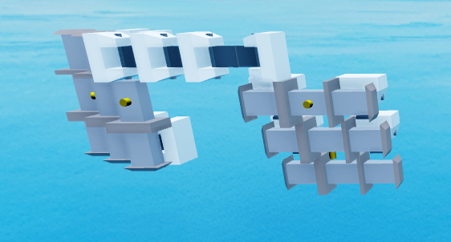
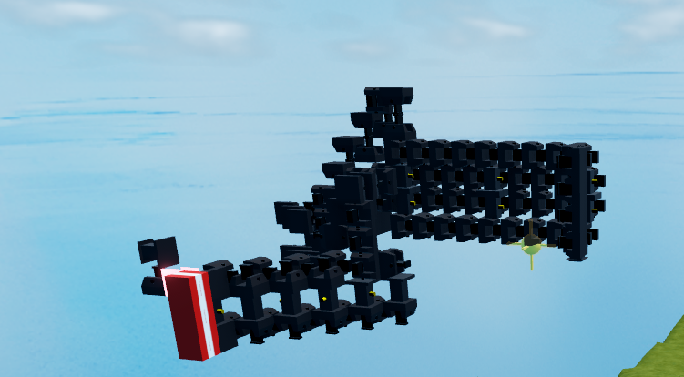
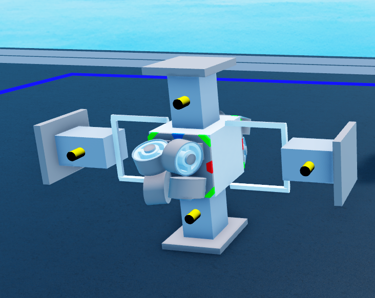

Gyro Cores
Gyro cores are one of the four core shredder archetypes (OG, Gyro, Balljoint, Omni). They function by using Motor2 blocks to rotate cleanly off an active axis lock. For detailed setups on axis locking mechanisms, see the Axis Locks Guide.
1 1x1 Gyro Cores


The 1x1 Gyro Core represents the current standard in competitive shredder construction. Evolving from the older 1x1.5 designs after Plane Crazy introduced toggleable block collisions to motors, 1x1 cores pack full pitch and roll functionality into a minimal single-block profile.
1.1 Benefits
1x1 cores offer significant advantages over legacy variants:
- Hitbox Reduction: Extreme centralization keeps your critical components packed small, leaving far less target area for opponent cutters.
- Optimal Armoring: Requires only a single armor module to fully encase the core.
- Low Contact Lag: Eliminates internal block collisions, reducing physical solver calculations and client-side stutter during high-speed turns.
1.2 Rigid vs. Non-Rigid Setups
Rigid Cores: The preferred choice for combat. By placing opposing motors on both ends of an axis, rigid cores counteract rotational torque forces when your cutter blades strike heavy targets or terrain, allowing maximum torque transfer and terrain clipping.
Non-Rigid Cores: Simpler to assemble by pulling two redundancy stacks into a shared coordinate space, but lack structural stability under heavy impacts. Force against the blades often deflects the core away rather than cutting through.
1.3 Build Tutorials
Watch the video guides below to learn how to construct both 1x1 core variants step-by-step:
2 1x1.5 Gyro Cores (Deprecated)

1x1.5 cores were an intermediate development using precise motor-locking alignment to achieve compact sizing before motor collision toggles existed. They have been completely superseded by true 1x1 builds.
3 3x5 Gyro Cores (Deprecated)

A classic design in Plane Crazy history, 3x5 gyros served as the primary core choice during early modern eras. While obsolete for modern PvP combat due to their large physical footprint, they remain widely recognized due to legacy YouTube tutorials.
4 ANO Cores (Deprecated)

The historical precursor to all gyro cores, the ANO core relied on piston prismatic constraints to simulate axis locking before dedicated gyro blocks were added to Plane Crazy. It is entirely obsolete in modern play.